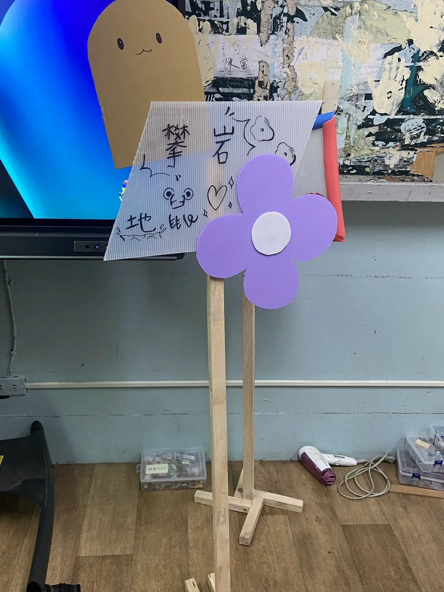
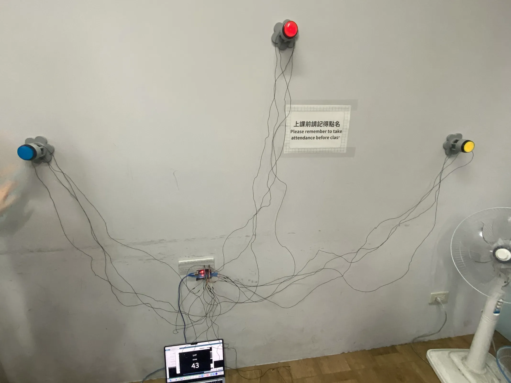
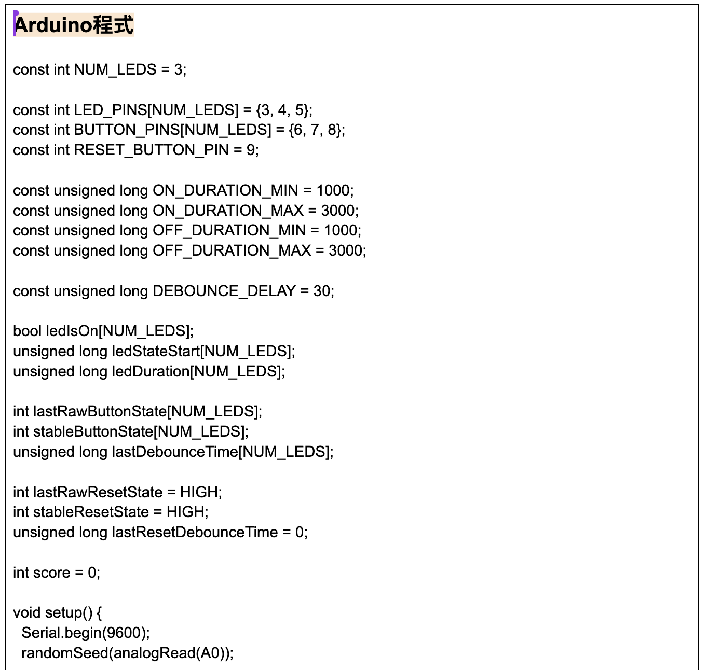
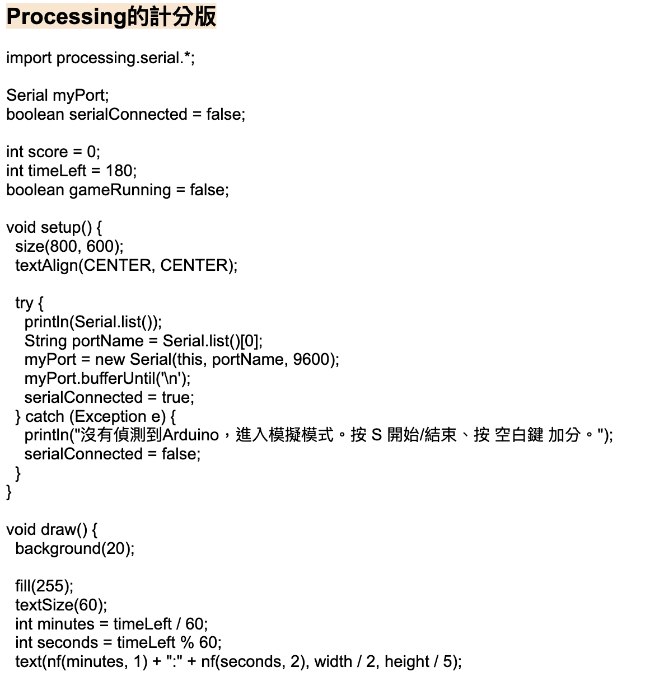
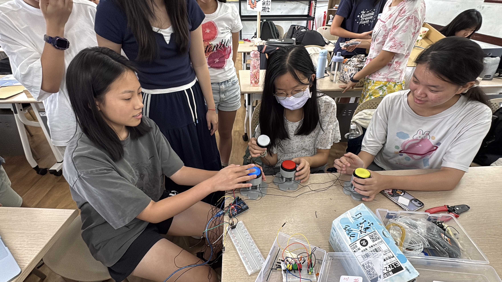
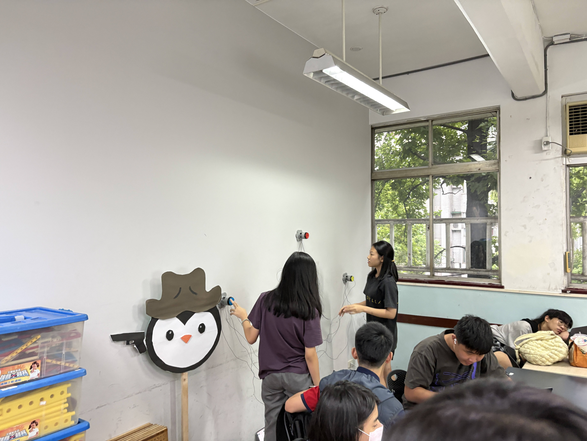
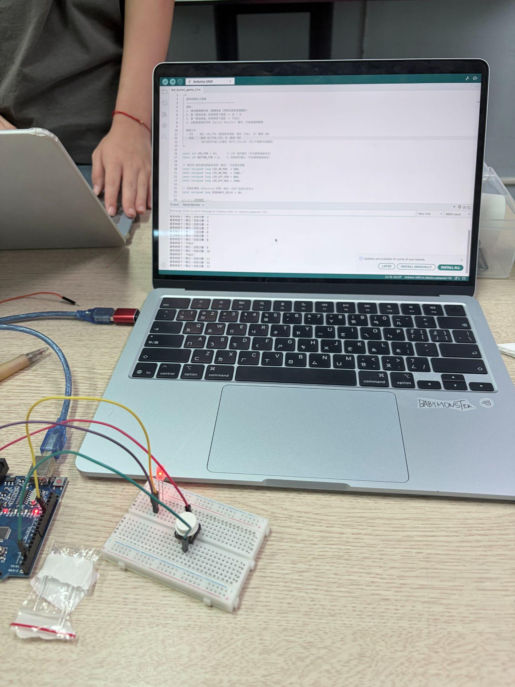
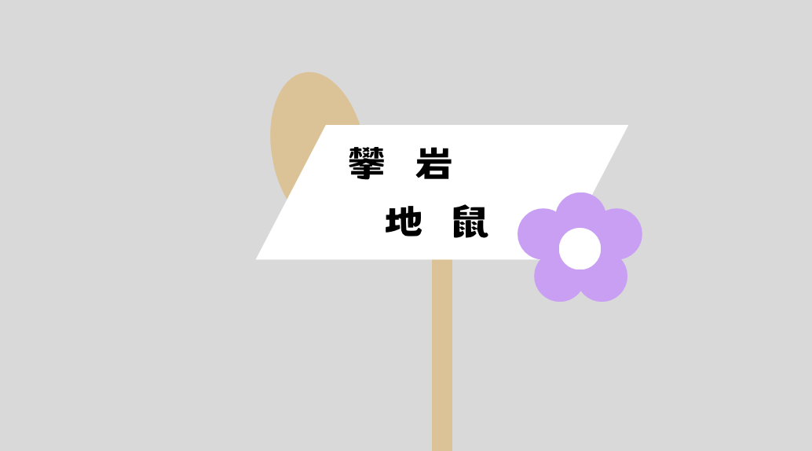
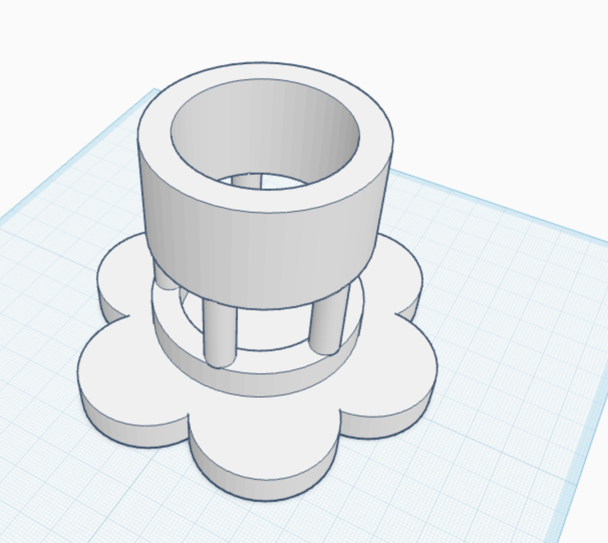

H組
組員：蔡寧、林宇馨、黃行書｜組長：蔡寧

想要變成攀岩打地鼠大師嗎？來我們機台實現你的夢想吧！
我需要一段可以匯入3 顆 LED、3顆按鈕的版本：一開始是單顆燈泡（LED）隨機發光，燈亮時按下按鈕就加一分，燈熄滅時按下按鈕不加分，擴充成 ：每顆 LED 各自獨立隨機亮滅（亮燈時間隨機取數，範圍後來調整為 1~3 秒），每顆 LED 各對應一顆按鈕，燈亮時按下對應按鈕加一分且該燈立即熄滅，燈熄滅時按下不加分，按太慢（燈已熄滅）也不加分；第 4 顆按鈕當重置鍵，按下把分數歸零。
程式
機台：焊接加上連接更多按鈕、整理線
程式：增加遊戲豐富度（玩家獲得十分之後，按鈕亮燈速度加快，以此類推）
美觀：製作一個遮蔽的板子將線遮起來





接線、Arduino程式、Processing 計分版

接線、招牌製作（招牌設計、PP板剪裁、磨木頭支架

接線、招牌製作（底座、主視覺）、3D列印
